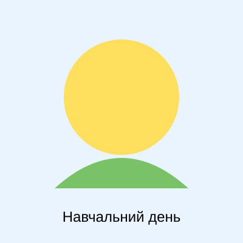

2 — підгрупа
| Понеділок | |||
|---|---|---|---|
| Пара | Час | 1-й тиждень | 2-й тиждень |
| 1 | 08:20–09:40 | Основи програмування та алгоритмічне мислення | Основи програмування та алгоритмічне мислення |
| 2 | 09:50–11:10 | [ЛЕКЦІЯ] Дискретна математика | [ЛЕКЦІЯ] Дискретна математика |
| 3 | 11:30–12:50 | — | — |
| 4 | 13:00–14:20 | — | — |
| 5 | 14:40–16:00 | — | — |
| 6 | 16:10–17:30 | — | — |
| 7 | 17:40–19:00 | — | — |

| Вівторок | |||
|---|---|---|---|
| Пара | Час | 1-й тиждень | 2-й тиждень |
| 1 | 08:20–09:40 | Математичні основи штучного інтелекту [група 3] | Математичні основи штучного інтелекту [група 3] |
| 2 | 09:50–11:10 | [ЛЕКЦІЯ] Математичні основи штучного інтелекту | [ЛЕКЦІЯ] Математичні основи штучного інтелекту |
| 3 | 11:30–12:50 | Дискретна математика | Дискретна математика |
| 4 | 13:00–14:20 | — | Актуальні питання історії та культури України |
| 5 | 14:40–16:00 | — | — |
| 6 | 16:10–17:30 | — | — |
| 7 | 17:40–19:00 | — | — |
| Середа | |||
|---|---|---|---|
| Пара | Час | 1-й тиждень | 2-й тиждень |
| 1 | 08:20–09:40 | Архітектура комп`ютерних систем | Архітектура комп`ютерних систем |
| 2 | 09:50–11:10 | [ЛЕКЦІЯ] Архітектура комп`ютерних систем | [ЛЕКЦІЯ] Архітектура комп`ютерних систем |
| 3 | 11:30–12:50 | Технології веброзробки | Технології веброзробки |
| 4 | 13:00–14:20 | Іноземна мова (за професійним спрямуванням) [група 3] | Іноземна мова (за професійним спрямуванням) [група 3] |
| 5 | 14:40–16:00 | — | — |
| 6 | 16:10–17:30 | — | — |
| 7 | 17:40–19:00 | — | — |
| Четвер | |||
|---|---|---|---|
| Пара | Час | 1-й тиждень | 2-й тиждень |
| 1 | 08:20–09:40 | — | [ЛЕКЦІЯ] Актуальні питання історії та культури України |
| 2 | 09:50–11:10 | [ЛЕКЦІЯ] Дискретна математика | Математичні основи штучного інтелекту [група 3] |
| 3 | 11:30–12:50 | [ЛЕКЦІЯ] Технології веброзробки | [ЛЕКЦІЯ] Технології веброзробки |
| 4 | 13:00–14:20 | — | — |
| 5 | 14:40–16:00 | — | — |
| 6 | 16:10–17:30 | — | — |
| 7 | 17:40–19:00 | — | — |
| П'ятниця | |||
|---|---|---|---|
| Пара | Час | 1-й тиждень | 2-й тиждень |
| 1 | 08:20–09:40 | Основи національного спротиву з 01.10.2026 військова кафедра | [ЛЕКЦІЯ] Основи програмування та алгоритмічне мислення |
| 2 | 09:50–11:10 | Основи національного спротиву з 01.10.2026 військова кафедра | [ЛЕКЦІЯ] Основи програмування та алгоритмічне мислення |
| 3 | 11:30–12:50 | Основи національного спротиву з 01.10.2026 військова кафедра | Основи програмування та алгоритмічне мислення |
| 4 | 13:00–14:20 | Основи національного спротиву з 01.10.2026 військова кафедра | Дискретна математика |
| 5 | 14:40–16:00 | — | — |
| 6 | 16:10–17:30 | — | — |
| 7 | 17:40–19:00 | — | — |
| Субота | |
|---|---|
| Час | Розклад вільного часу |
| Ранок | Вільний час |
| День | Вільний час |
| Вечір | Вільний час |
| Неділя | |
|---|---|
| Час | Розклад вільного часу |
| Ранок | Вільний час |
| День | Вільний час |
| Вечір | Вільний час |